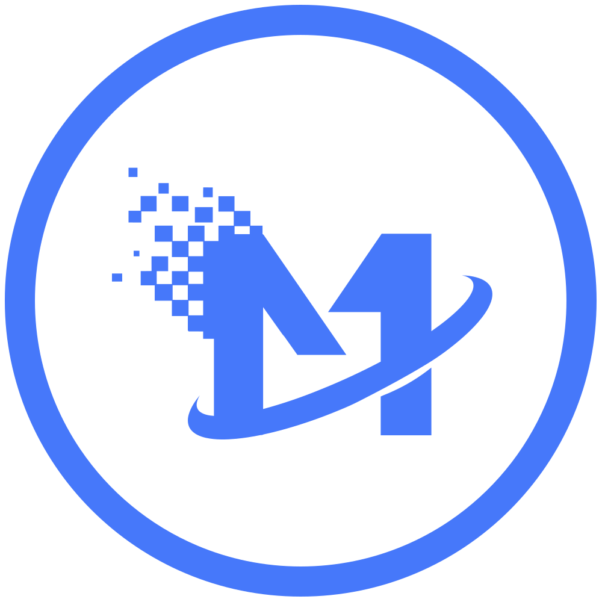

<!doctype html>
<html>

<head>
  <meta charset="utf-8">
  <title>智美通</title>
  <base href="/">
  <!-- 让IE浏览器更好   运行更高浏览器版本-->
  <meta http-equiv="X-UA-Compatible" content="IE=Edge,chrome=1">
  <meta name="viewport" content="width=device-width, initial-scale=1">
  <link rel="icon" type="image/png" href="favicon.png">
  <link rel="icon" type="image/x-icon" href="favicon.ico?v1.0">
  <!--<link href="https://fonts.googleapis.com/icon?family=Material+Icons" rel="stylesheet">-->
  <link rel="stylesheet" href="assets/icons/font.css">
</head>
<style>
  body {
    font-family: "Microsoft YaHei" !important;
    background: #EBEFF5 !important;
    height: 100%;
  }
  @media (min-width: 306px) and (max-width: 998px) {
    /* body{
      padding-right:15px !important;
    } */
  }

/* 警告弹框自定义位置 */
.my-notify{
    position:fixed;
    left:50%;
    margin-left: -150px;
    top:30px;
    height:0;
  }

  .my-notify2{
    position:fixed;
    left:5% !important;
    top:0px;
    height:90px;

    background: #FFB10E !important;
  }


  @media (min-width: 992px) {
    .modal-lg {
      max-width: 1000px !important;
    }
  }
  dl, ol, ul{
    margin-bottom: 0 !important;
    padding:0;
  }
  li{
    list-style-type: none;
  }
  div ::-webkit-scrollbar {
    width: 5px;
  }
  div ::-webkit-scrollbar-thumb {
    background: #4D435A;
  }
  div ::-webkit-scrollbar-button {
    display: none !important;
  }
  div{
    scrollbar-arrow-color: none;
    scrollbar-face-color: #333;
    scrollbar-3dlight-color: #666;
    scrollbar-highlight-color: #666;
    scrollbar-shadow-color: #999;
    scrollbar-darkshadow-color: #666;
    scrollbar-track-color: #666;
    scrollbar-base-color:#f8f8f8;
  }

  button.close span{
    cursor: pointer;
  }


  html { scrollbar-face-color:#f6f6f6; scrollbar-highlight-color:#fff; scrollbar-shadow-color:#eeeeee; scrollbar-3dlight-color:#eeeeee; scrollbar-arrow-color:#000; scrollbar-track-color:#fff; scrollbar-darkshadow-color:#fff; }

  /* tbody tr:nth-of-type(even),tbody tr:nth-of-type(even) input,tbody tr:nth-of-type(even) select{
    background-color:#f9fafc;
  } */
  .btn-link{
    border-color: transparent;
  }
  /* 全局修改Ngmodal样式 */
  .modal-content {
    border:none !important;
  }


  .modal.show .modal-pay{
    max-width:1690px !important;
    min-width: 950px;
    margin:0 0 0 230px !important;
    height:100%;

  }
  .modal-pay .modal-content{
    background: transparent;
    height:100%;
  }
.modal {
    background: rgba(0,0,0,0.2) !important;
}


  #fuse-splash-screen {
    display: block;
    position: absolute;
    top: 0;
    left: 0;
    right: 0;
    bottom: 0;
    background-color: #3C4252;
    z-index: 99999;
    pointer-events: none;
  }

  #fuse-splash-screen .center {
    display: block;
    width: 100%;
    position: absolute;
    top: 50%;
    transform: translateY(-50%);
  }

  #fuse-splash-screen .logo {
    width: 400px;
    margin: 0 auto;
    text-align: center;
  }

  #fuse-splash-screen .logo img {
    filter: drop-shadow(0px 10px 6px rgba(0, 0, 0, 0.2))
  }


/* lodding动画 */
.spinner {
  margin: 20px auto 0;
  width: 150px;
  text-align: center;
}
 
.spinner > div {
  width: 15px;
  height: 15px;
  background-color: #4678fa;
 
  border-radius: 100%;
  display: inline-block;
  -webkit-animation: bouncedelay 1.4s infinite ease-in-out;
  animation: bouncedelay 1.4s infinite ease-in-out;
  -webkit-animation-fill-mode: both;
  animation-fill-mode: both;
}
 
.spinner .bounce1 {
  -webkit-animation-delay: -0.32s;
  animation-delay: -0.32s;
}
 
.spinner .bounce2 {
  -webkit-animation-delay: -0.16s;
  animation-delay: -0.16s;
}
 
@-webkit-keyframes bouncedelay {
  0%, 80%, 100% { -webkit-transform: scale(0.0) }
  40% { -webkit-transform: scale(1.0) }
}
 
@keyframes bouncedelay {
  0%, 80%, 100% {
    transform: scale(0.0);
    -webkit-transform: scale(0.0);
  } 40% {
    transform: scale(1.0);
    -webkit-transform: scale(1.0);
  }
}
/* lodding动画 end*/
</style>
<body>


<fuse-splash-screen id="fuse-splash-screen">

  <div class="center">

    <div class="logo">
      <!--  -->
      <!--  -->
      <div style="margin:0 auto;background:url(assets/images/icon/logo.svg) no-repeat;width:150px;height:150px;"></div>
      <div>
          <div class="spinner">
              <div class="bounce1"></div>
              <div class="bounce2"></div>
              <div class="bounce3"></div>
            </div>
      </div>
      
    </div>

  </div>

</fuse-splash-screen>

<app></app>

<script>
  // 访问浏览器内核
  if (navigator.userAgent.indexOf('Trident') > -1) {
    alert('为了让您得到更好的网上浏览体验\n 1、切换到极速模式下进行浏览\n 2、使用IE11以上的浏览器 ')
  }
</script>
</body>
</html>
